This documentation provides a complete guide to using Vehicle Service Tracker on iPad. It covers creating and managing vehicles, recording service history, attaching receipts and documents, and using search and reporting tools to organize and review your data.
Refer to the following annotated screen shots for an overview of major features.
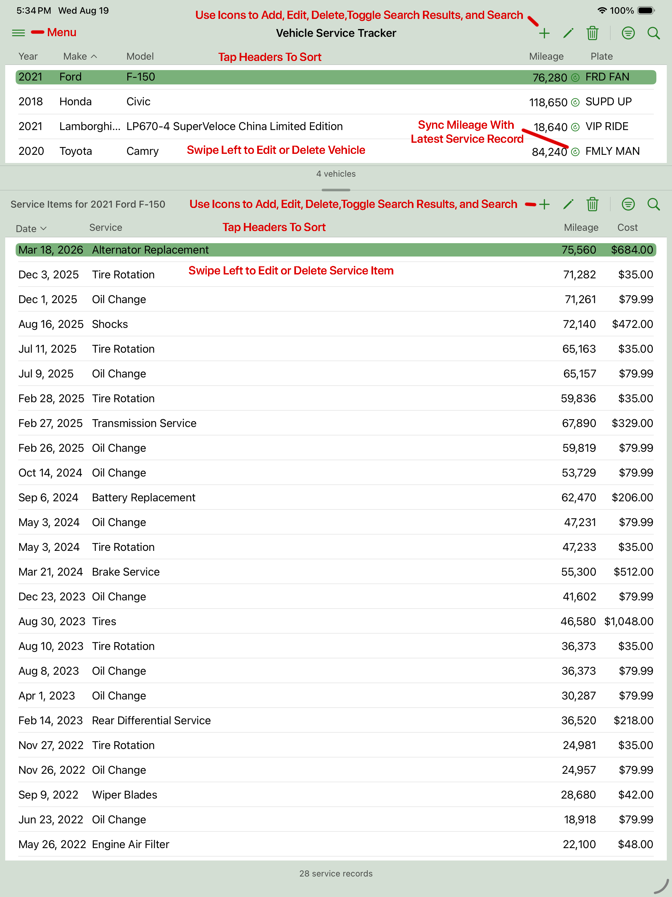
Annotated Main Screen
Documentation Index
- Getting Started
- Adding and Managing Vehicles
- Adding and Managing Service Records
- Working With Attachments
- Searching, Filtering, and Sorting
- Viewing Reports
- Exporting and Importing Data
- Create Sample Data / Clearing Your Data
- Changing Application Color Scheme
- Application Menu
- FAQ and Troubleshooting
Getting Started
Welcome to Vehicle Service Tracker! This Getting Started section provides an overview of the core features, including creating vehicle records, adding service history, attaching receipts or images, and reviewing your maintenance data over time.
Detailed instructions for each feature are covered in the sections that follow.
Add Your First Vehicle
Start by adding a vehicle record. Enter basic details such as year, make, model, current odometer, VIN, and license plate.
Add Service Records
Once a vehicle exists, you can add service records for maintenance, repairs, inspections, parts replacement, or any other work you want to track. Records can include the service date, mileage, total cost, summary, detailed notes, and who performed the work.
Attach Receipts, Images, or PDFs
Service records can include attachments such as receipts, invoices, photos, or PDF documents. This helps keep supporting documents connected to the exact service event they belong to.
Search and Review Your History
Use the search and sorting tools to find vehicles or service records by the available text, date, mileage, cost, and provider criteria.
View Reports
Vehicle Service Tracker includes report views that display vehicle and service information in a clean, organized format. Reports use the current search results and sort order.
Export Or Import Your Data
Use the import and export tools to create a portable copy of your vehicle records, service records, and attachments.
Create Sample Data / Clearing Your Data
You can load sample vehicles and service records to explore the app before entering your own vehicle history.
You can also clear all vehicles, service records, and attachments later if you want to remove sample data or completely reset the app.
Adding and Managing Vehicles
Vehicle records are the foundation of the app. Each service record belongs to a vehicle, so start by creating the vehicles you want to track.
Vehicle details include:
- Year, make, and model
- Current odometer reading
- VIN and license plate
To add a new vehicle, tap the + (Add) button on the vehicle menu bar. A new vehicle is created, and the Vehicle Edit screen opens, where you can enter or update its details.
Note: When adding a new vehicle, search results are turned off automatically and the toggle switches to Showing All Records. This prevents newly created vehicles from being immediately hidden if they don't match the current search filters.
To update an existing vehicle, do one of the following:
- Tap the pencil (Edit) button on the vehicle menu bar. The Vehicle Edit screen opens, where you can make your changes. When you're finished, tap Done. Changes are saved automatically.
- Swipe left on the vehicle row and tap Edit. The Vehicle Edit screen opens, where you can make your changes. Changes are saved automatically.
Tip: To quickly update a vehicle's current mileage value to match the mileage from its most recent service item, tap the update mileage icon (↻) on the Vehicle Edit screen.
To delete a vehicle, do one of the following:
- Tap the trash can (Delete) button on the service item menu bar and confirm the deletion.
- Swipe left on the vehicle row and tap Delete.
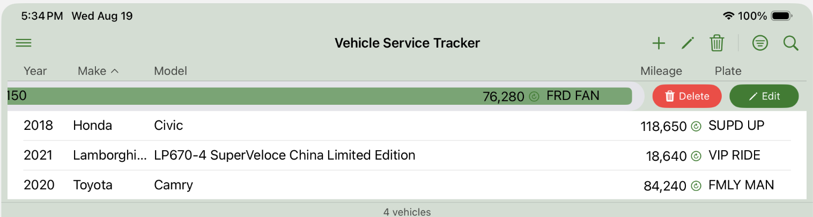
Swipe Left to Edit or Delete a Vehicle
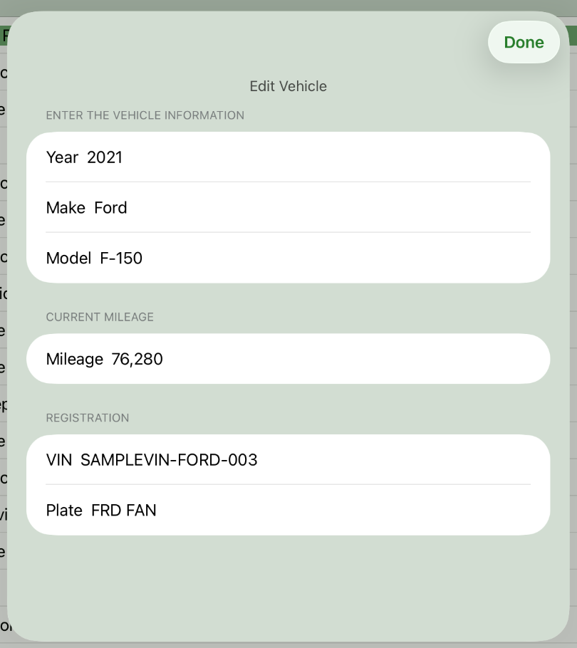
Vehicle Edit Screen
Adding and Managing Service Records
Service records track the actual work performed on each vehicle. Use them for routine maintenance, repairs, inspections, parts replacement, diagnostic visits, or any other vehicle-related event.
A service record may include:
- Service date
- Mileage at the time of service
- Total cost
- Short summary
- Detailed description or notes
- Service provider or person who performed the work
- Attachments such as receipts, invoices, images, or PDFs
To add a new service item, tap the + (Add) button on the service item menu bar. A new service item is created, and the Service Item Edit screen opens, where you can enter or update its details.
Note: When adding a new service item, search results are turned off automatically and the toggle switches to Showing All Records. This prevents newly created service items from being immediately hidden if they don’t match the current search filters.
To update an existing service item, do one of the following:
- Tap the pencil (Edit) button on the service item menu bar. The Service Item Edit screen opens, where you can make your changes. When you're finished, tap Done. Changes are saved automatically.
- Swipe left on the service item row and tap Edit. The Service Item Edit screen opens, where you can make your changes. Changes are saved automatically.
To delete a service item, do one of the following:
- Tap the trash can (Delete) button on the service item menu bar and confirm the deletion.
- Swipe left on the service item row and tap Delete.
Important: Deleting a service item also removes its associated attachments, so review the record carefully before deleting it.
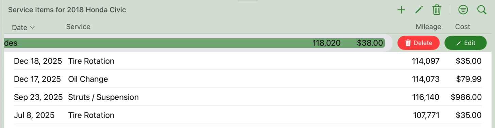
Swipe Left to Edit or Delete a Service Item
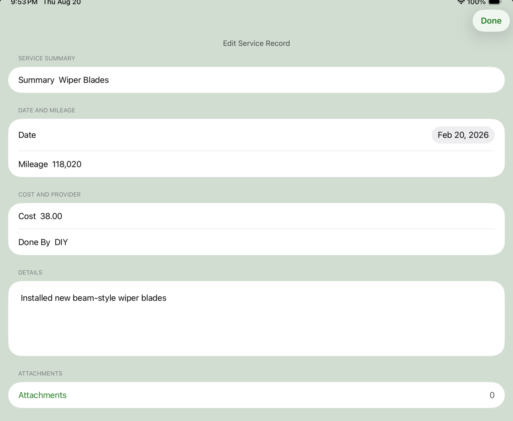
Service Item Edit Screen
Working With Attachments
Attachments are managed through the Attachments screen. You can open this screen by tapping the Attachments link on the Service Item Edit screen.
Use the Attachments screen to add, view, or remove receipts, invoices, photos, scanned documents, or PDF files related to the selected service item.
When attached files are present, the number of files is displayed next to the Attachments link.
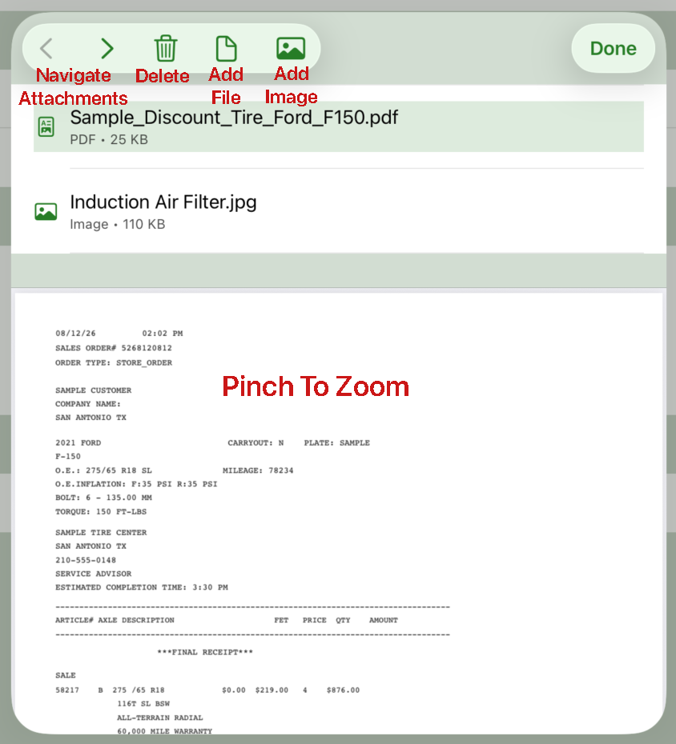
Attachments Screen
Searching, Filtering, and Sorting
Vehicle Service Tracker includes separate searching and sorting tools for vehicles and service records.
Vehicle Search filters the vehicle list using a text field for vehicle information and minimum or maximum odometer values.
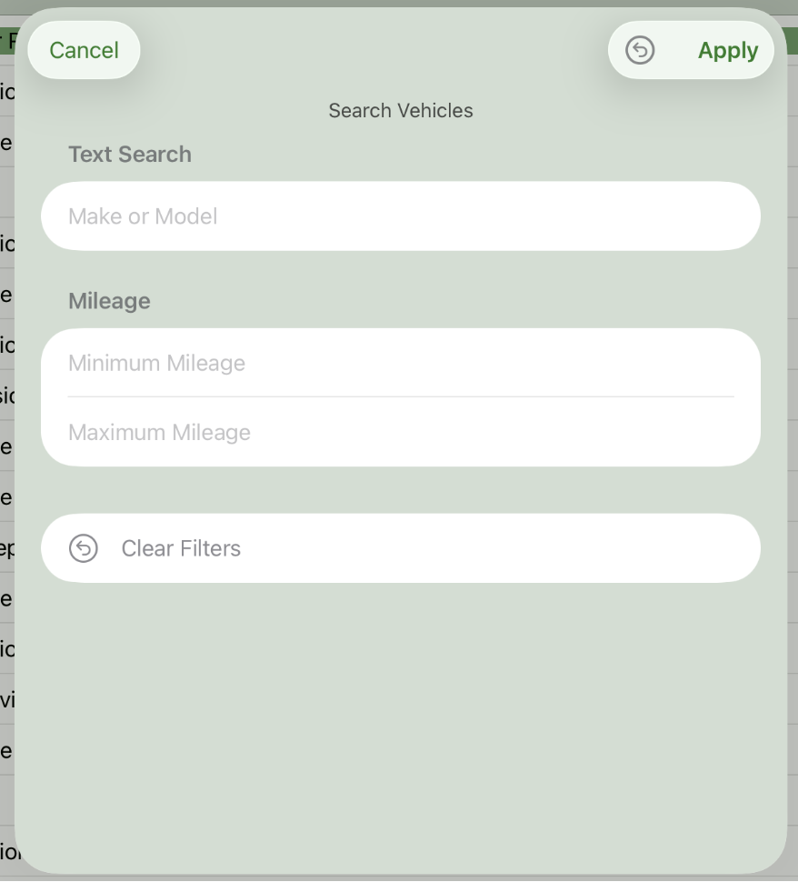
Vehicle Search Criteria Screen
Service Item Search filters service records using a text field, service-date range, mileage-at-service range, cost range, and service provider.
Date shortcuts are supported in search date fields. For example, entering 2/2026 in a start or end date field automatically searches the entire month of February 2026.
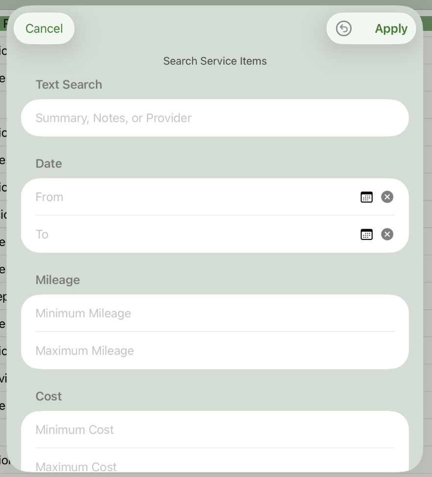
Service Item Search Criteria Screen
Note: The Search Results Toggle icon on the menu bar lets you switch between the matching search results and all records without clearing the search criteria you entered.
Reports use the current search results and sort order.
Viewing Reports
Reports provide a clean, reviewable summary of your vehicle and service data.
Reports can be used to review service history, summarize ownership costs, or prepare a readable maintenance history for your records.
Reports use the current search results and sort order by default. You can also choose to display all records without changing your current search criteria.
Reports are organized by vehicle. Tap the > disclosure control next to a vehicle to expand or collapse its associated service items, allowing you to view either a summary or detailed service history.
Reports can be exported as PDF files, or printed using an AirPrint compatible printer
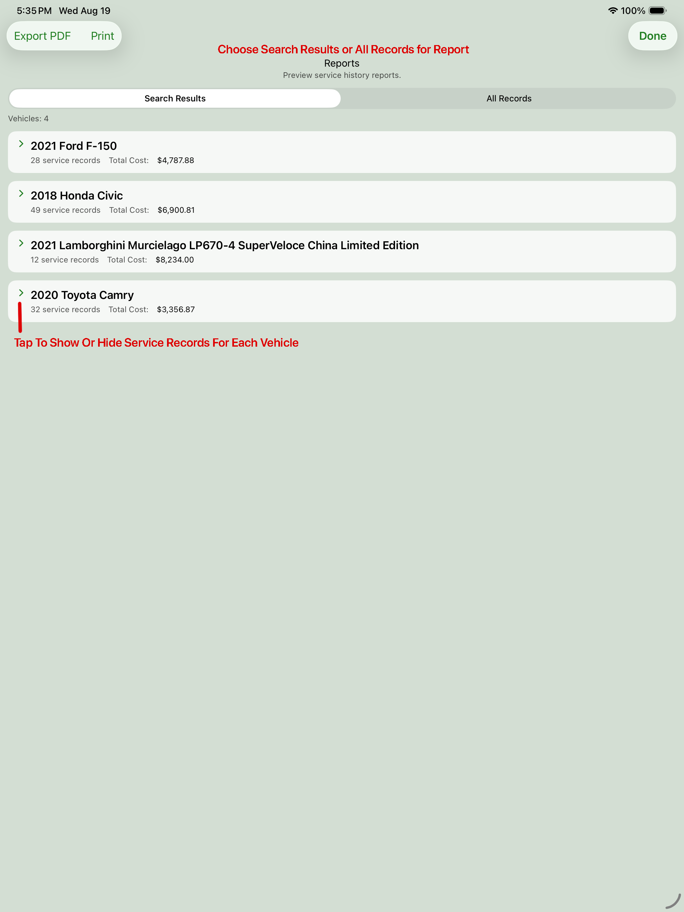
Reports Screen (Collapsed)
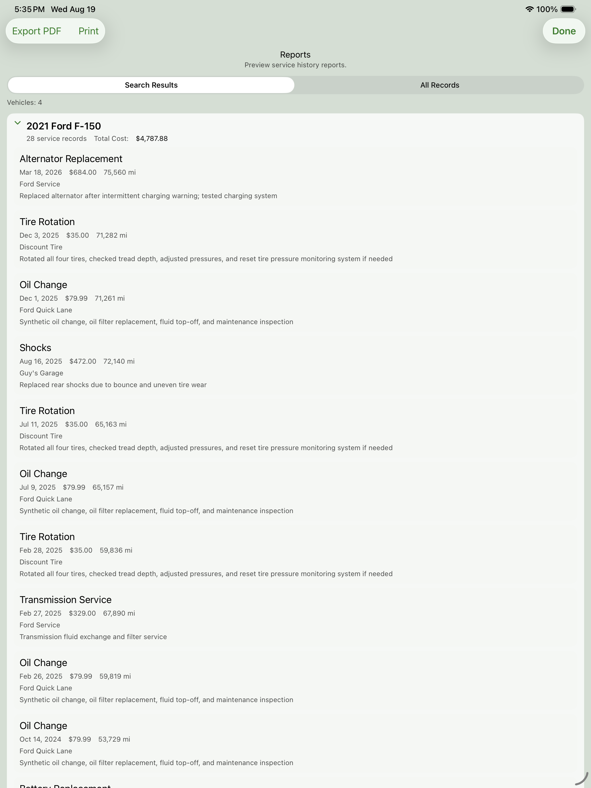
Reports Screen (Expanded) Annotated
Exporting and Importing Data
Use the Import/Export tools to create an exported copy of your Vehicle Service Tracker data or import previously exported data.
An export can contain:
- Vehicle records
- Service records
- Attached files such as receipts, photos, and PDF documents
The exported folder contains a JSON data file and an Attachments subfolder when attachments are included.
Warning: Importing data replaces the vehicles, service records, and attachments currently stored in the app. This action cannot be undone.
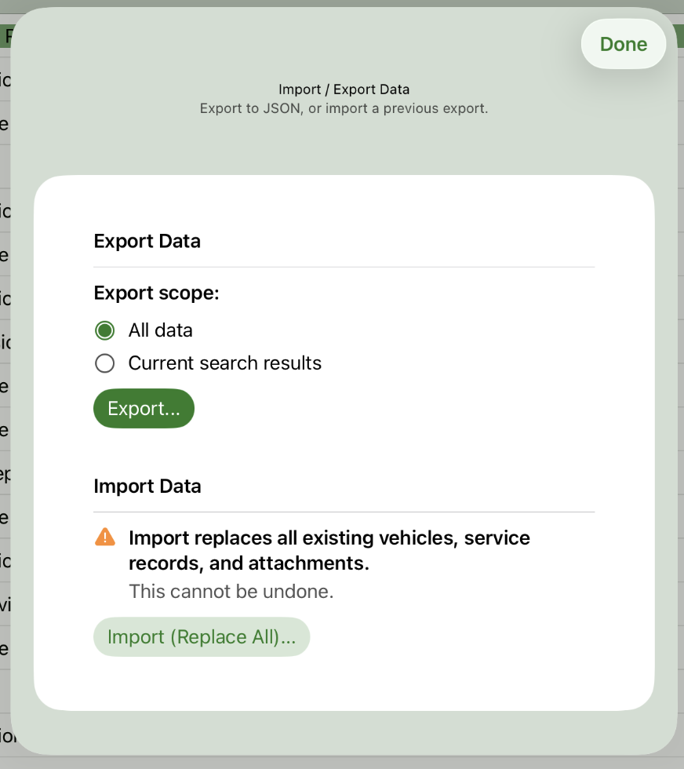
Import Export Screen
Create Sample Data / Clearing Your Data
Use the Manage Data tools to create sample data for exploring the app or to clear the current database contents.
Creating sample data adds a set of vehicles and service records so you can experiment with the app before entering your own maintenance history.
Warning: Creating sample data replaces the existing vehicles, service records, and attachments currently stored in the app.
You can also completely remove all current vehicles, service records, and attachments when resetting the app or starting over.
Warning: Clearing the database permanently removes all data and cannot be undone.
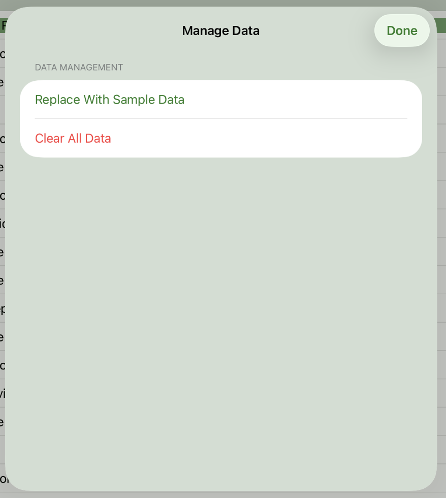
Manage Data Screen
Changing Application Color Scheme
Use the theme selector to choose from the color schemes included with Vehicle Service Tracker. The app must be restarted for the color change to become active.
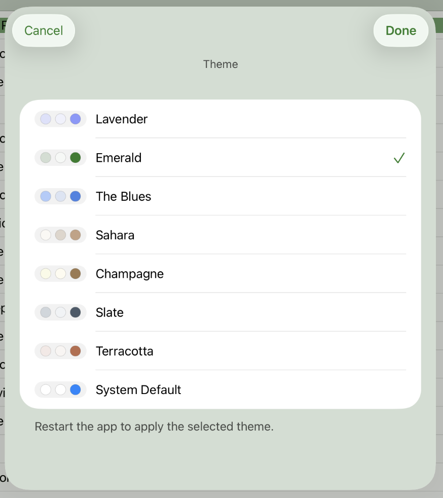
Choose Color Theme
Application Menu
Application-wide commands are available from the Application Menu, accessed by tapping the ☰ (hamburger) button at the top of the main vehicle list.
The Application Menu provides access to the following commands:
- Report – View a report of your vehicle and service data.
- Manage Data – Create sample data or permanently remove all vehicles, service items, and attachments.
- Choose Theme – Select the application's color theme.
- Import / Export – Import or export your vehicle and service data for backup or transfer.
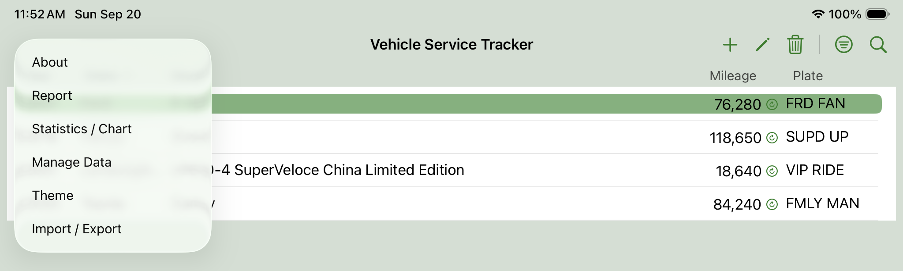
Application Menu
FAQ and Troubleshooting
How can I see how much I've spent on maintenance?
Use the Reports feature together with the search and filtering tools to review maintenance costs over time. For example, you can filter records by vehicle, date range, or mileage range, then open the report to view the total service cost for the displayed records.
How is my data saved?
Vehicle Service Tracker saves changes automatically as you work. Adding or editing vehicles, service records, attachments, and other application data does not require a separate Save button.
Why did Showing Search Results turn off when I added a new vehicle or service item?
When creating a new vehicle or service item, Vehicle Service Tracker automatically switches from Showing Search Results to Showing All Records. This helps ensure that newly created records remain visible, even if they would not match the current search filters.
Why are some reports missing records?
Reports use the current search results by default. If records appear to be missing, review your active search filters, date ranges, mileage ranges, or cost ranges. You can clear the current filters or switch the report to Showing All Records to include every record without changing your current search criteria.
Does Vehicle Service Tracker support iCloud sync?
Vehicle Service Tracker supports iCloud synchronization between Macs signed into the same Apple ID. When iCloud is enabled for the app, vehicles, service records, attachments, and related data automatically synchronize in the background.